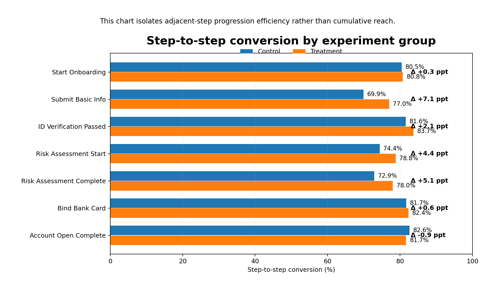
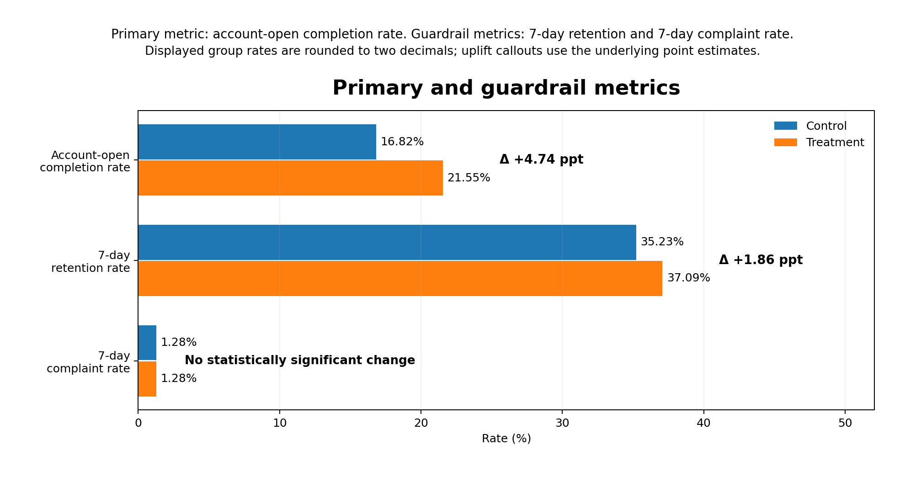
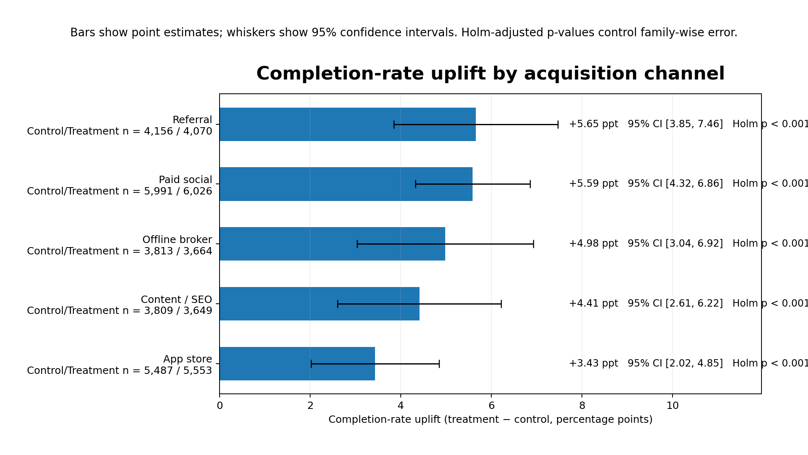

Synthetic data · Reproducible portfolio case · Growth / Product analytics
券商 App 新客开户转化链路 A/B 实验评估
这个项目不是只展示几张图的作品页，而是一个可复现的实验评估案例：包含 user-level 随机分流、指标口径定义、balance check、漏斗诊断、双样本比例检验、精确 95% 置信区间、渠道分层与灰度建议。
边界说明：本项目使用 synthetic data 构建，目的是复现真实增长实验评估流程，而不是声称得到真实券商经营结论。
46,218
实验样本
221,046
事件日志
+4.74 ppt
Account-open completion uplift
+1.94 ppt
7-day first-deposit uplift
1. 业务问题与实验设计
业务问题
券商开户链路长、表单负担重、风险测评中断多。业务想验证：将“表单精简 + 进度条提示 + 关键疑问解释”打包成一组流程优化后，是否能够显著提高开户完成率，同时不损害体验质量。
实验设置
- 随机化单位：user-level 50/50 assignment
- 实验周期：2026-01-01 至 2026-03-16（75 天）
- Control / Treatment：23,256 / 22,962
- 统计方法：双样本比例 z 检验 + 精确 95% CI；渠道分层使用 Holm correction
指标口径
| Metric | Role | Definition |
|---|---|---|
| Account-open completion rate | Primary | 用户在观察窗口内完成开户的比例 |
| 7-day retention rate | Guardrail | 分流后 7 日内仍有回访/活跃记录的比例 |
| 7-day complaint rate | Guardrail | 分流后 7 日内产生投诉记录的比例 |
| 7-day first-deposit rate | Secondary business-quality | 分流后 7 日内完成首次入金的比例 |
2. 基线平衡性与总体结果
| Dimension / Metric | Result | Interpretation |
|---|---|---|
| channel balance | p = 0.205 | 未见显著失衡 |
| device_type balance | p = 0.286 | 未见显著失衡 |
| source_intent balance | p = 0.421 | 未见显著失衡 |
| age_band balance | p = 0.936 | 未见显著失衡 |
| Account-open completion | 16.82% → 21.55% | +4.74 ppt, 95% CI [4.02, 5.45] |
| 7-day retention | 35.23% → 37.09% | +1.86 ppt, 95% CI [0.98, 2.73] |
| 7-day complaint | 1.28% → 1.28% | +0.00 ppt, not statistically significant |
| 7-day first deposit | 34.18% → 36.12% | +1.94 ppt, 95% CI [1.07, 2.81] |
Figure 1. Cumulative stage reach

展示的是从 landing page 起累计走到各阶段的人群占比，不应误读为相邻步骤转化率。
Figure 2. Step-to-step conversion

最大的相邻步骤改善集中在 Submit Basic Info、Risk Assessment Start 与 Risk Assessment Complete。
Figure 3. Primary and guardrail metrics

3. 渠道分层与灰度建议
| Channel | Control / Treatment n | Uplift | 95% CI | Holm p | Priority proxy |
|---|---|---|---|---|---|
| Referral | 4,156 / 4,070 | +5.65 ppt | [3.85, 7.46] | < 0.001 | 465 |
| Paid social | 5,991 / 6,026 | +5.59 ppt | [4.32, 6.86] | < 0.001 | 672 |
| Offline broker | 3,813 / 3,664 | +4.98 ppt | [3.04, 6.92] | < 0.001 | 372 |
| Content / SEO | 3,809 / 3,649 | +4.41 ppt | [2.61, 6.22] | < 0.001 | 329 |
| App store | 5,487 / 5,553 | +3.43 ppt | [2.02, 4.85] | < 0.001 | 379 |
- 第一阶段建议：先在 Paid social 与 Referral 灰度上线。
- 原因：两者同时具备较高 uplift 和较高业务价值，不应只看 uplift 点估计，还要结合 volume 与 risk。
- 下一轮：把 bundled treatment 拆成单因素或 2×2 设计，避免归因不清。
Figure 4. Channel uplift with 95% confidence intervals

Figure 5. Exact confidence intervals for key metrics